คู่มือการใช้งาน
FrontEnd An22
ระบบขายหน้าร้าน คลังสินค้า และเอกสารภาษี
รุ่น 2.0 · ฉบับวันที่ 7 พฤศจิกายน 2569
สารบัญ
1. เริ่มต้นใช้งาน
บทบาทผู้ใช้ สมัครใช้งาน เข้าสู่ระบบ / เลือกสาขา ส่วนประกอบของหน้าจอ ลืมรหัสผ่าน / ออกจากระบบ 2. ตั้งค่าร้าน
ข้อมูลบริษัท ข้อมูลสาขาและใบเสร็จ เครื่องนี้ (เครื่อง POS) โหมดมืด 3. ข้อมูลหลัก
สาขา หมวดหมู่สินค้า ผู้จำหน่าย ช่องทางชำระเงิน เครื่อง POS 4. ผู้ใช้งานและสิทธิ์
เพิ่มผู้ใช้ ตั้งรหัสผ่านให้ผู้ใช้ เมนูที่พนักงานเห็น ตารางสิทธิ์ 5. สินค้า (SKU)
รายการสินค้า เพิ่มสินค้าทั่วไป สินค้าคุม Serial สินค้าบริการ / สถานะการขาย นำเข้าจาก Excel พิมพ์ป้ายบาร์โค้ด 6. ราคาขาย
ตั้งราคา นำเข้า / ส่งออก Excel 7. โปรโมชั่น
สร้างโปรโมชั่น นำเข้า / ส่งออก Excel 8. คลังสินค้า
รายการคลัง รับสินค้าเข้า รับเข้า Serial รับเข้าจาก Excel ตัดสินค้าออก ประวัติ Serial บัตรสต็อก สต็อกทุกสาขา แนะนำสั่งซื้อ ป้าย Serial 9. โอนสินค้าระหว่างสาขา 10. ขายหน้าร้าน (POS)
เปิดกะ เพิ่มสินค้าในบิล โปรโมชั่นและของแถม ส่วนลดพิเศษ ชำระเงิน พักบิล ใบกำกับภาษีเต็มรูปตอนขาย เมนูกะ ปิดกะ 11. การขายและเอกสาร
รายการบิล หน้าบิล ยกเลิกบิล ใบลดหนี้ (คืนสินค้า) เปลี่ยนสินค้า ใบกำกับภาษีเต็มรูป รายงานภาษีขาย กะขาย 12. บัญชีบริษัท ภาคผนวก — ตารางสิทธิ์ · ปัญหาที่พบบ่อย · คำศัพท์
เริ่มต้นใช้งาน
สมัครบริษัท เข้าสู่ระบบ และรู้จักหน้าจอหลัก
1.1 บทบาทผู้ใช้
ทุกคนในบริษัทมีบทบาทอย่างใดอย่างหนึ่ง ในคู่มือนี้ใช้ป้ายสีบอกว่าหัวข้อไหนใครทำได้
บทบาท ทำอะไรได้ เจ้าของ ทำได้ทุกอย่างเหมือนผู้ดูแล และดูแลบัญชีบริษัท (แพ็กเกจ ค่าบริการ ส่งออก / ลบข้อมูล) บริษัทหนึ่งมีเจ้าของคนเดียว ผู้ดูแล ตั้งค่าร้าน ข้อมูลหลัก ราคา โปรโมชั่น ผู้ใช้ ตัดสต็อก ยกเลิกบิล ออกใบลดหนี้ อนุมัติปิดกะ ผู้ดูแลที่เลือก "ทุกสาขา" ดูแลได้ทั้งบริษัท พนักงาน ขายหน้าร้าน เปิด / ปิดกะของตัวเอง รับสินค้าเข้า เปลี่ยนสินค้า และเมนูอื่นที่ผู้ดูแลเปิดให้
1.2 สมัครใช้งาน เจ้าของ
เปิดหน้า สมัครใช้งานบริษัทใหม่ จากหน้าเข้าสู่ระบบ แล้วกรอกข้อมูล 4 ส่วน
บริษัท — รหัสบริษัท (A-Z, 0-9 ยาว 3–20 ตัว ใช้ตอนเข้าสู่ระบบ เปลี่ยนภายหลังไม่ได้) ชื่อบริษัท การจดทะเบียน VAT และเลขประจำตัวผู้เสียภาษี 13 หลักสาขาแรก — รหัสสาขา เลขสาขาตามกรมสรรพากร (สำนักงานใหญ่ = 00000) ชื่อ ที่อยู่ เบอร์โทรเจ้าของบริษัท — ชื่อ อีเมล (ใช้กู้รหัสผ่านและรับใบแจ้งหนี้) ชื่อผู้ใช้ และรหัสผ่านแพ็กเกจ — Starter / Standard / Pro ต่างกันที่จำนวนสาขา ผู้ใช้ และเครื่อง POS
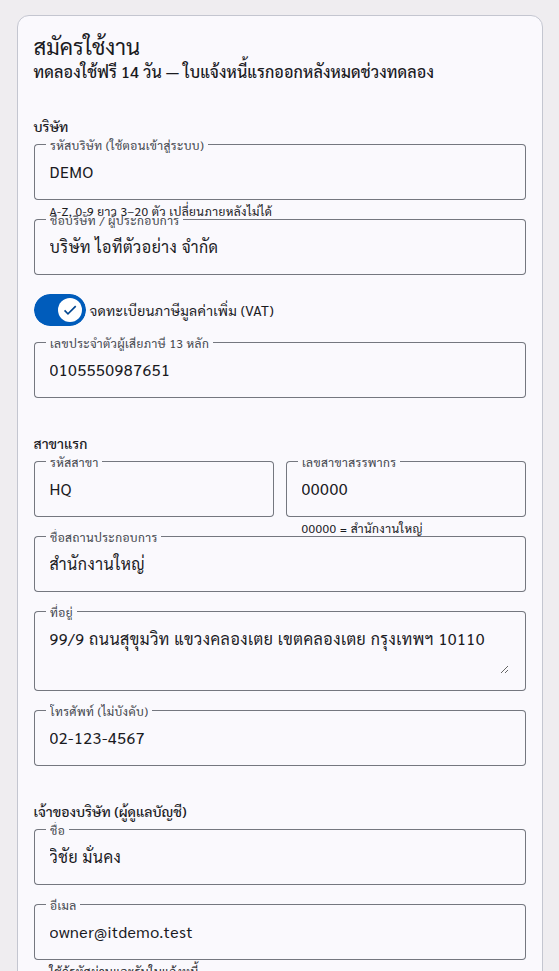
ฟอร์มสมัครใช้งาน — ข้อมูลบริษัทและสาขาแรก 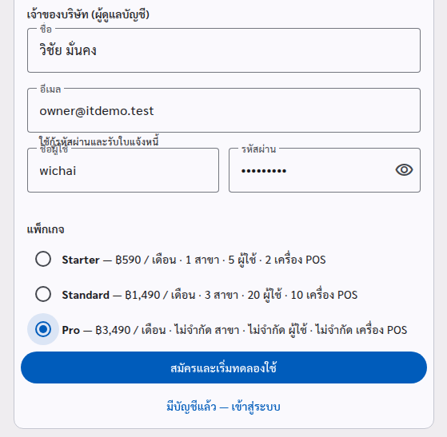
ข้อมูลเจ้าของบริษัทและเลือกแพ็กเกจ ทดลองใช้ฟรี 14 วัน ใบแจ้งหนี้แรกออกหลังหมดช่วงทดลอง ดูสถานะได้ที่ บัญชีบริษัท → แพ็กเกจ (บทที่ 12)
1.3 เข้าสู่ระบบ
เครื่องจะจำรหัสบริษัทไว้ ถ้าเป็นบริษัทอื่นกด เปลี่ยน
กรอก ชื่อผู้ใช้ และ รหัสผ่าน แล้วกด เข้าสู่ระบบ
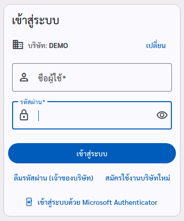
หน้าเข้าสู่ระบบ ข้อควรรู้ ถ้าข้อมูลไม่ถูกต้อง ระบบตอบข้อความเดียวกันทุกกรณี (รหัสบริษัท ชื่อผู้ใช้ หรือรหัสผ่านผิด) เพื่อความปลอดภัย ถ้าใส่ผิดหลายครั้งติดกัน บัญชีจะถูกล็อกชั่วคราว
เลือกสาขา
ผู้ใช้ที่ทำงานได้หลายสาขาจะเห็นหน้า เลือกสาขา ครั้งแรกที่เข้าระบบบนเครื่องนั้น เครื่องจะจำสาขาที่เลือกไว้ ถ้ามีสาขาเดียวระบบเลือกให้เอง
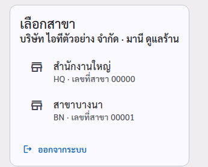
หน้าเลือกสาขา 1.4 ส่วนประกอบของหน้าจอ
☰ (มุมซ้ายบน) แสดง / ซ่อนเมนูด้านข้าง เมนูซ่อนอยู่ทุกครั้งที่เปิดหน้าใหม่บริษัท · สาขา บอกว่ากำลังทำงานในสาขาไหน ถ้าทำงานได้หลายสาขา กดเพื่อสลับสาขา (หน้าจอจะโหลดใหม่ ข้อมูลทุกเมนูเป็นของสาขาที่เลือก)☾ สลับโหมดมืด / สว่างชื่อผู้ใช้ (มุมขวาบน) เปิดเมนู ตั้งค่า และ ออกจากระบบ
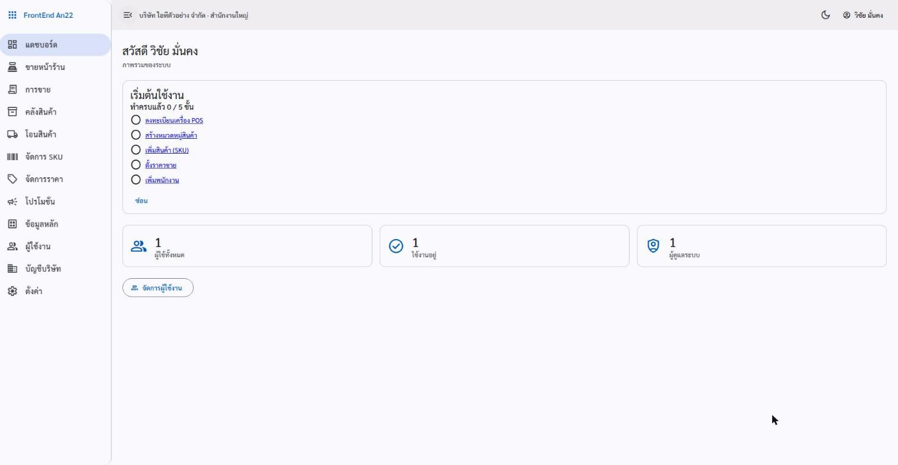
หน้าแดชบอร์ดพร้อมเมนูด้านข้าง (เจ้าของเห็นครบทุกเมนู) และการ์ด "เริ่มต้นใช้งาน" การ์ด เริ่มต้นใช้งาน บนแดชบอร์ดบอกขั้นตอนที่ควรทำหลังสมัคร (ลงทะเบียนเครื่อง POS สร้างหมวดหมู่ เพิ่มสินค้า ตั้งราคา เพิ่มพนักงาน) กดชื่อขั้นตอนเพื่อไปยังหน้านั้น ทำครบแล้วการ์ดจะหายไป
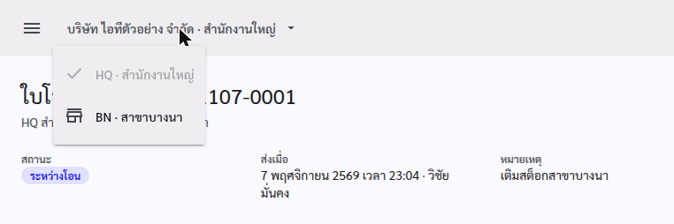
สลับสาขาจากแถบด้านบน 1.5 ลืมรหัสผ่าน / ออกจากระบบ
เจ้าของบริษัท กด ลืมรหัสผ่าน (เจ้าของบริษัท) ที่หน้าเข้าสู่ระบบ ระบบส่งลิงก์ตั้งรหัสใหม่ไปที่อีเมลเจ้าของ (ใช้ได้ครั้งเดียว มีอายุจำกัด)ผู้ดูแลและพนักงาน ให้ผู้ดูแลตั้งรหัสผ่านใหม่ให้ (หัวข้อ 4.2)ออกจากระบบ: กดชื่อผู้ใช้มุมขวาบน → ออกจากระบบ
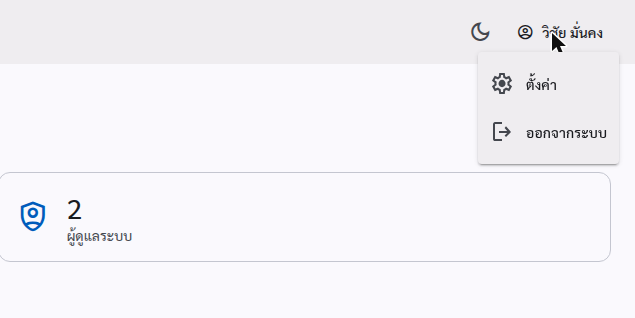
เมนูผู้ใช้
ตั้งค่าร้าน
เมนู ตั้งค่า — ข้อมูลบนหัว / ท้ายใบเสร็จ กฎการขาย และเครื่อง POS ของอุปกรณ์นี้
ผู้ดูแล แก้ไขได้ · พนักงานเห็นเฉพาะส่วนการแสดงผลและโปรไฟล์
2.1 ข้อมูลบริษัท (ใช้ทุกสาขา)
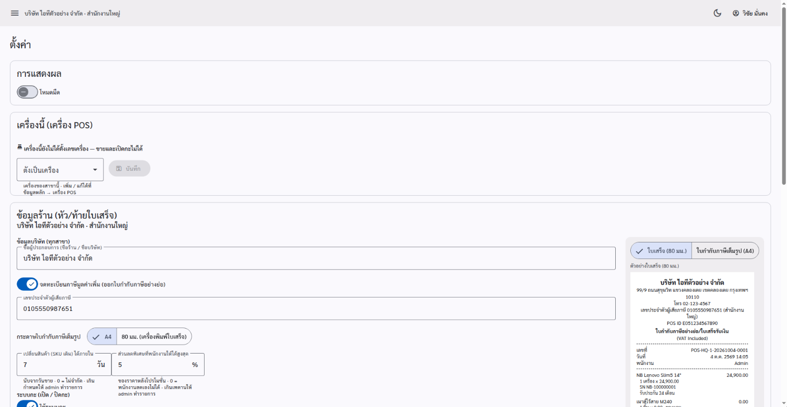
หน้าตั้งค่า ด้านขวาคือตัวอย่างใบเสร็จที่เปลี่ยนตามที่กรอก
ช่อง ความหมาย ชื่อผู้ประกอบการ / เลขผู้เสียภาษี พิมพ์บนใบเสร็จ ใบกำกับภาษี และรายงานภาษีขาย จดทะเบียน VAT เปิด = ใบเสร็จเป็นใบกำกับภาษีอย่างย่อ ปิด = ไม่คิด VAT และออกใบกำกับภาษีไม่ได้ กระดาษใบกำกับภาษีเต็มรูป A4 หรือ 80 มม. (เครื่องพิมพ์ใบเสร็จ) เปลี่ยนสินค้าได้ภายใน จำนวนวันนับจากวันขายที่พนักงานทำใบเปลี่ยนสินค้าได้ (ค่าเริ่มต้น 7 วัน, 0 = ไม่จำกัด) ผู้ดูแลทำได้ทุกเวลา ส่วนลดพิเศษที่พนักงานให้ได้สูงสุด % ของราคาหลังโปรโมชั่น (ค่าเริ่มต้น 5%) ผู้ดูแลให้ได้ไม่จำกัด ใช้ระบบกะ เปิด = การขาย ยกเลิกบิล คืนเงิน และนำเงินเข้า / ออกลิ้นชักต้องอยู่ในกะที่เปิดอยู่ของเครื่อง ส่วนต่างที่ต้องให้ admin อนุมัติ ตอนปิดกะ ถ้าช่องทางใดนับขาด / เกินมากกว่าค่านี้ ต้องมีผู้ดูแลอนุมัติ (ค่าเริ่มต้น 100 บาท) เตือนเมื่อกะเปิดนานเกิน ค่าเริ่มต้น 12 ชั่วโมง (เตือนอย่างเดียว ไม่บล็อก) ผู้ใช้ทั่วไปเห็นทุน / กำไร ปิด (ค่าเริ่มต้น) = พนักงานไม่เห็นทุน มูลค่าคลัง และกำไรทุกหน้าจอ
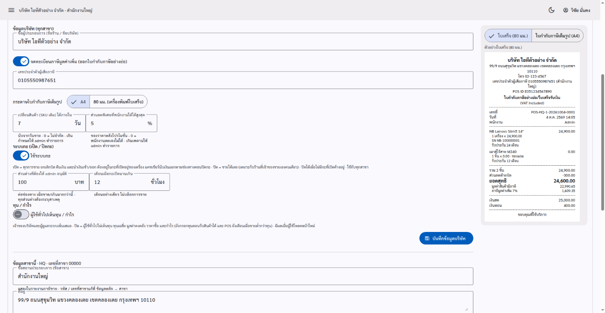
ค่ากะและการแสดงทุน / กำไร กด บันทึกข้อมูลบริษัท 2.2 ข้อมูลสาขาและใบเสร็จ
แต่ละสาขากรอกชื่อสถานประกอบการ ที่อยู่ เบอร์โทร และข้อความท้ายใบเสร็จของตัวเอง แล้วกด บันทึกข้อมูลสาขา เอกสารทุกใบพิมพ์ข้อมูลของสาขาที่ขาย
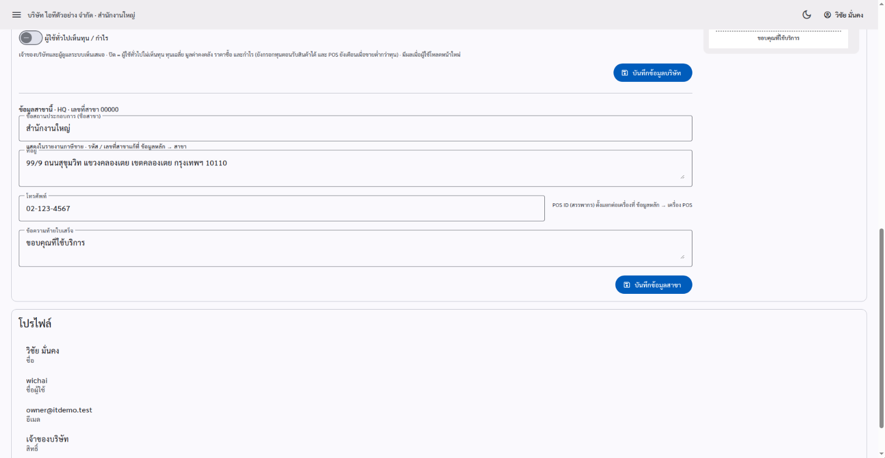
ข้อมูลสาขาและโปรไฟล์ผู้ใช้ 2.3 เครื่องนี้ (เครื่อง POS) ผู้ดูแล
ทุกเครื่องที่ใช้ขายต้องตั้งเลขเครื่องครั้งเดียว ก่อนตั้ง เครื่องนั้นขายและเปิดกะไม่ได้ (ต้องลงทะเบียนเครื่องที่ ข้อมูลหลัก → เครื่อง POS ก่อน หัวข้อ 3.5)
เลือกเครื่องในช่อง ตั้งเป็นเครื่อง กด บันทึก 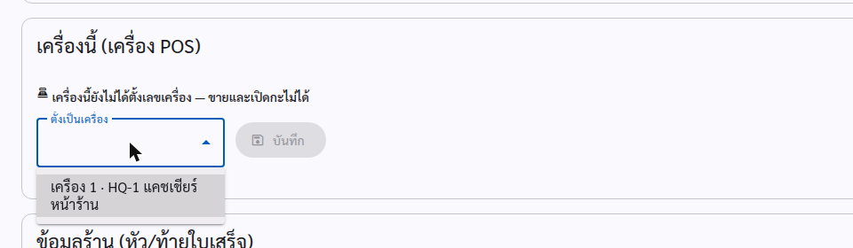
เลือกเครื่อง POS ของสาขานี้ 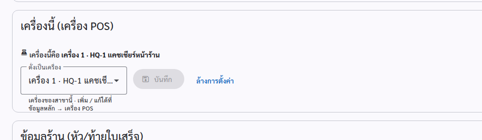
ตั้งเลขเครื่องแล้ว ข้อควรระวัง เปลี่ยนเลขเครื่องไม่ได้ระหว่างที่เครื่องนั้นมีกะเปิดอยู่ พนักงานตั้งเลขเครื่องเองไม่ได้
2.4 โหมดมืด
กดไอคอน ☾ ที่แถบด้านบน หรือสวิตช์ โหมดมืด ในหน้าตั้งค่า ค่านี้จำแยกตามเครื่อง
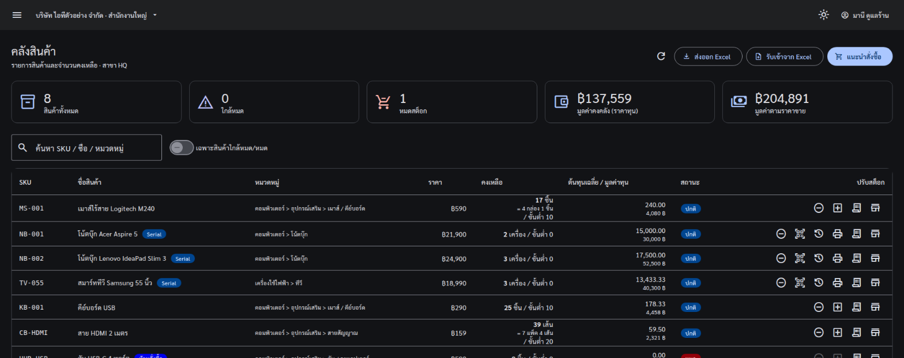
หน้าคลังสินค้าในโหมดมืด
ข้อมูลหลัก
เมนู ข้อมูลหลัก มี 5 แท็บ: หมวดหมู่สินค้า · ผู้จำหน่าย · ช่องทางชำระเงิน · เครื่อง POS · สาขา
ผู้ดูแล เพิ่ม / แก้ไขได้ (สาขาและการตั้งค่าระดับบริษัท เฉพาะผู้ดูแลทุกสาขาหรือเจ้าของ)
3.1 สาขา
1 สาขา = 1 คลังสินค้า สต็อก ต้นทุนเฉลี่ย กะ และเลขเอกสารแยกตามสาขา ส่วนรายการสินค้า ราคา และโปรโมชั่นใช้ร่วมกันทั้งบริษัท
กด + เพิ่มสาขา กรอกรหัสสาขา (ใช้ในเลขเอกสาร เช่น BN) เลขที่สาขาของกรมสรรพากร 5 หลัก ชื่อ ที่อยู่ เบอร์โทร กด บันทึก 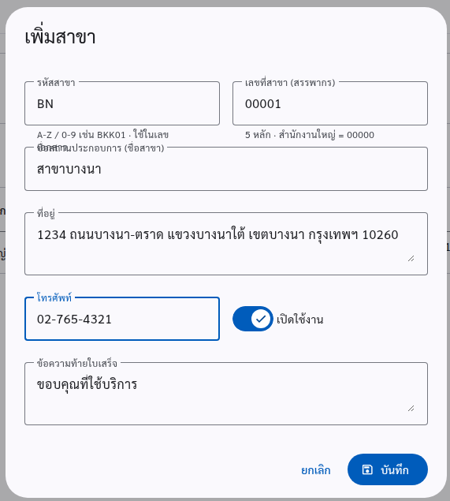
ฟอร์มเพิ่มสาขา 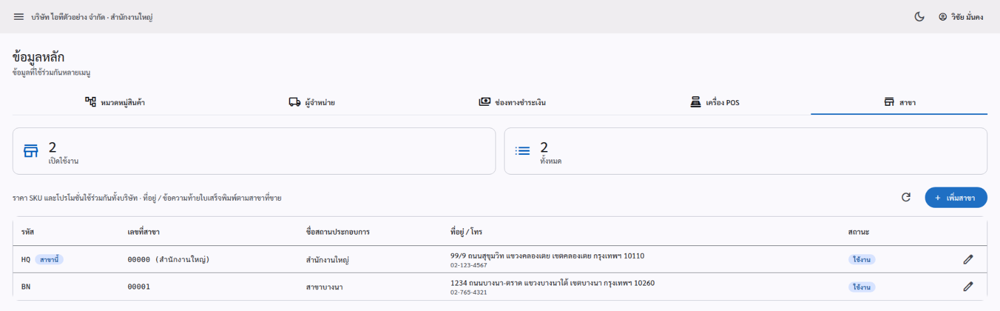
รายการสาขา (สาขาไม่ลบ ถ้าเลิกใช้ให้ปิดใช้งาน) 3.2 หมวดหมู่สินค้า
หมวดหมู่มี 3 ระดับ: แผนก > หมวด > หมวดย่อย สินค้าต้องอยู่ในหมวดที่อยู่ล่างสุดของสาย (ไม่มีหมวดย่อยแล้ว)
+ เพิ่มแผนก สร้างระดับบนสุดปุ่ม + ท้ายแถว เพิ่มหมวดย่อยใต้หมวดนั้น
นำเข้า Excel เพิ่มหรือแก้หลายหมวดพร้อมกัน: ดาวน์โหลดแม่แบบ กรอกหนึ่งแถวต่อหนึ่งหมวด (เว้นรหัสหมวดแม่ไว้ถ้าเป็นแผนก) อัปโหลด ตรวจผลทุกแถว แล้วกดนำเข้าส่งออก Excel ได้หมวดหมู่ทั้งหมดในรูปแบบเดียวกับแม่แบบ แก้ในไฟล์แล้วนำเข้ากลับได้เลย ระบบบันทึกเฉพาะแถวที่เปลี่ยนลบได้เฉพาะหมวดที่ไม่มีหมวดย่อยและไม่มีสินค้า หมวดที่มีสินค้าแล้วเพิ่มหมวดย่อยใต้ไม่ได้
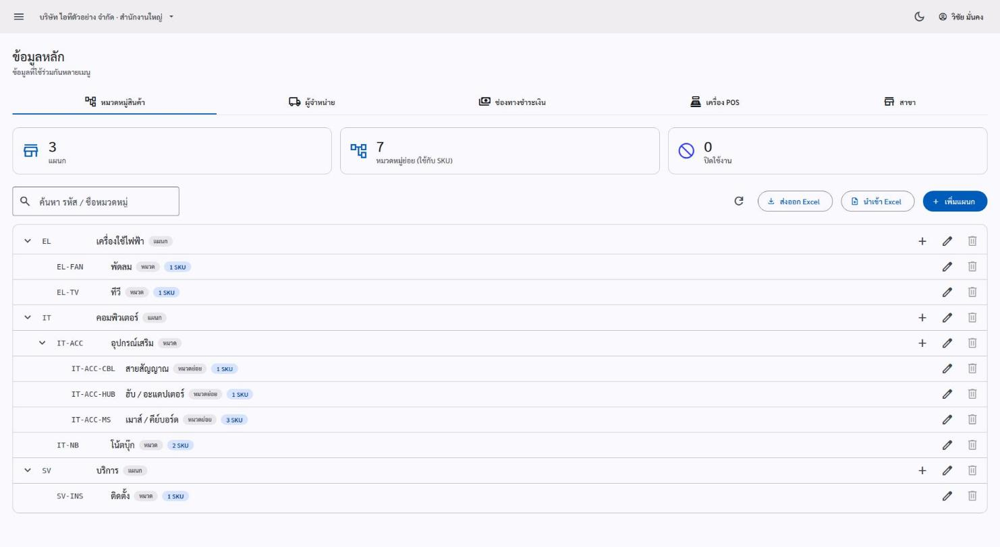
โครงสร้างหมวดหมู่ 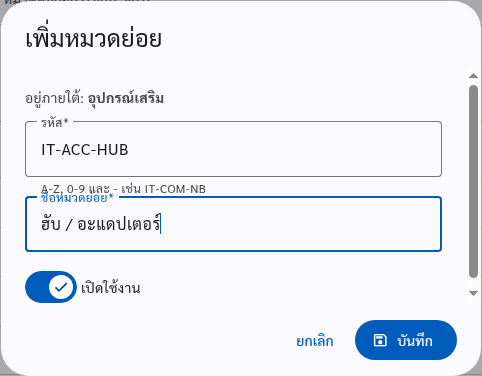
เพิ่มหมวดย่อยใต้ "อุปกรณ์เสริม" 3.3 ผู้จำหน่าย
ใช้ผูกกับสินค้าเพื่อเก็บราคาซื้อ ระยะเวลาส่งของ (lead time) และจำนวนสั่งขั้นต่ำ (MOQ) ซึ่งใช้ในหน้าแนะนำสั่งซื้อ
เลขผู้เสียภาษีต้องถูกต้องตามหลักตรวจสอบ เลือก สำนักงานใหญ่ หรือ สาขา (เลข 5 หลัก)
เครดิตเทอม 0 วัน = เงินสด
ผู้จำหน่ายที่ผูกกับสินค้าแล้วลบไม่ได้ ให้ปิดใช้งานแทน
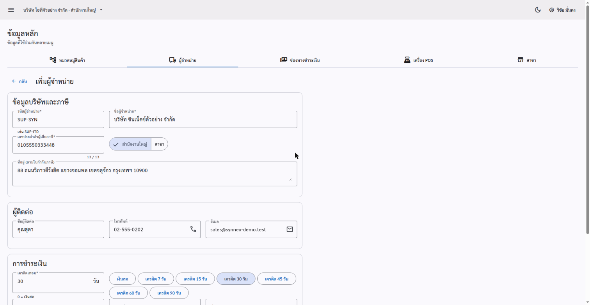
ฟอร์มเพิ่มผู้จำหน่าย 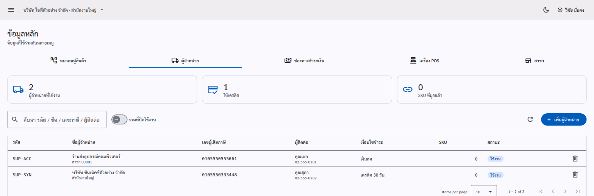
รายการผู้จำหน่าย 3.4 ช่องทางชำระเงิน
แต่ละช่องทาง = 1 ปุ่มในหน้าชำระเงินของ POS มีเงินสด 1 ช่องทางมาตั้งแต่สมัคร (ต้องมีเงินสดที่เปิดใช้อย่างน้อย 1 ช่องทางเสมอ)
ประเภท ช่องที่ใช้ เงินสด การปัดเศษ (ไม่ปัด / 25 สตางค์ / 1 บาท) ทอนเงินได้ บัตรเครดิต / เดบิต ค่าธรรมเนียม (MDR) และเลขอ้างอิง เช่น เลขอนุมัติ QR พร้อมเพย์ หมายเลขพร้อมเพย์ (เบอร์มือถือหรือเลขผู้เสียภาษี) โอนเงิน เลขบัญชีที่รับโอน และเลขอ้างอิงการโอน ผ่อนชำระ จำนวนเดือนที่ผ่อนได้ ยอดขั้นต่ำ ค่าธรรมเนียม
ตรวจตอนปิดกะ : กรอกยอดตรวจ = แคชเชียร์กรอกยอดจากหลักฐาน (สลิป EDC) · ติ๊กตรวจ = ยืนยันว่าตรวจในแอปธนาคารแล้ว · ไม่ต้องตรวจ
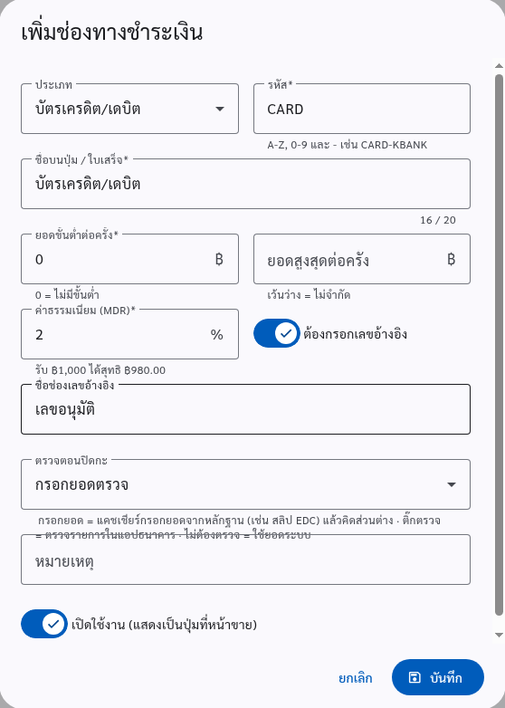
เพิ่มช่องทางบัตรเครดิต / เดบิต 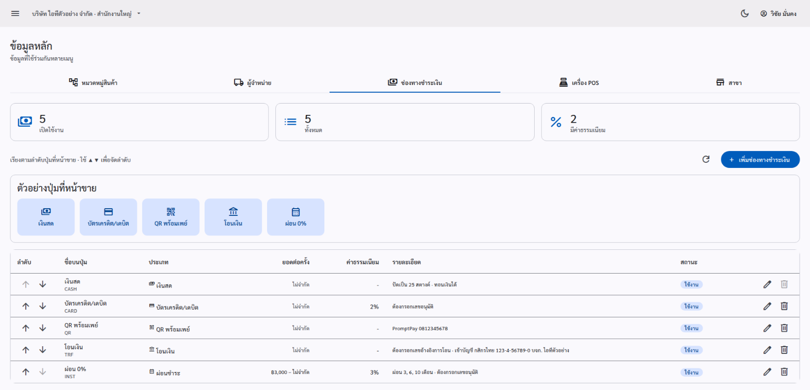
ใช้ลูกศร ↑ ↓ จัดลำดับปุ่ม ด้านบนแสดงตัวอย่างปุ่มที่หน้าขาย 3.5 เครื่อง POS
ลงทะเบียนทุกเครื่องที่ใช้ขาย (1 เครื่อง = 1 ลิ้นชักเงิน) เลขเครื่องไม่ซ้ำทั้งบริษัทและเปลี่ยนไม่ได้ ใส่ POS ID ที่ได้รับอนุมัติจากกรมสรรพากรเพื่อพิมพ์บนใบกำกับภาษีอย่างย่อ เลขบิลรันแยกตามเครื่องและวัน เช่น POS-HQ-1-20261107-0001
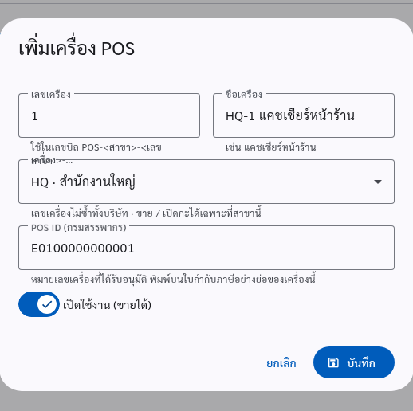
ฟอร์มเพิ่มเครื่อง POS 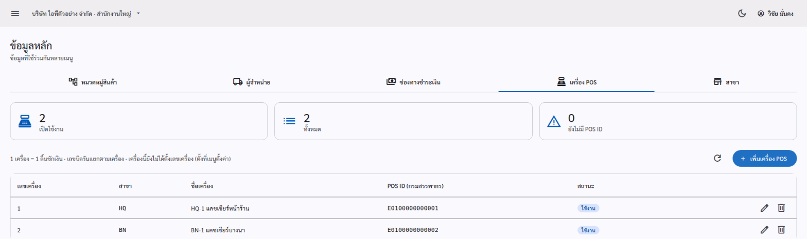
รายการเครื่อง POS ของทุกสาขา
ผู้ใช้งานและสิทธิ์
เมนู ผู้ใช้งาน — เพิ่มพนักงาน กำหนดบทบาท สาขา และเมนูที่พนักงานเห็น
ผู้ดูแล (ผู้ดูแลสาขาจัดการได้เฉพาะผู้ใช้ในสาขาของตัวเอง)
4.1 เพิ่มผู้ใช้
กด + เพิ่มผู้ใช้
กรอกชื่อผู้ใช้สำหรับเข้าระบบ (a-z, 0-9, . _ - ยาว 3–30 ตัว ไม่ซ้ำในบริษัท) และชื่อที่แสดง อีเมลไม่บังคับ
เลือกสิทธิ์: ผู้ดูแลระบบ หรือ ผู้ใช้ทั่วไป
เลือกสาขาที่เข้าได้ หรือเปิด ทุกสาขา (รวมสาขาที่เพิ่มภายหลัง)
ตั้งรหัสผ่าน (อย่างน้อย 4 ตัว) แล้วกด บันทึก
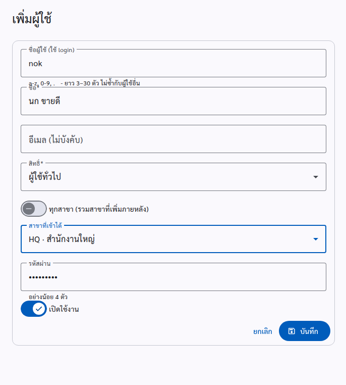
ฟอร์มเพิ่มผู้ใช้ 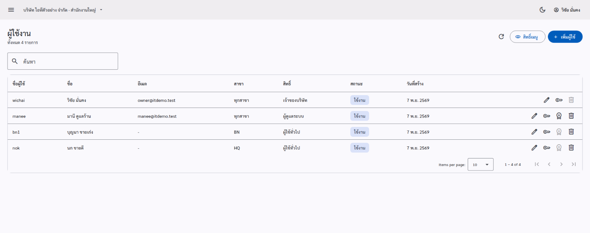
รายการผู้ใช้ — ปุ่มท้ายแถว: แก้ไข · ตั้งรหัสผ่าน · โอนความเป็นเจ้าของ · ลบ กฎที่ระบบบังคับ ลด / ปิด / ลบสิทธิ์ตัวเองไม่ได้ · ต้องเหลือผู้ดูแลที่ใช้งานอย่างน้อย 1 คน · เจ้าของบริษัทลบหรือเปลี่ยนบทบาทไม่ได้ ถ้าจะเปลี่ยนเจ้าของให้ใช้ปุ่ม โอนความเป็นเจ้าของ (เฉพาะเจ้าของ) · จำนวนผู้ใช้ที่เปิดใช้งานถูกจำกัดตามแพ็กเกจ
4.2 ตั้งรหัสผ่านให้ผู้ใช้
กดไอคอนกุญแจในแถวผู้ใช้ กรอกรหัสใหม่ แล้วแจ้งรหัสนี้ให้ผู้ใช้
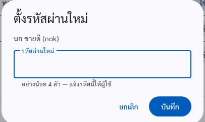
ตั้งรหัสผ่านใหม่ 4.3 เมนูที่พนักงานเห็น
กด สิทธิ์เมนู ที่หน้ารายการผู้ใช้ เลือกเมนูที่ผู้ใช้ทั่วไปทุกคนเห็น (ค่าเริ่มต้น: แดชบอร์ด ขายหน้าร้าน การขาย ตั้งค่า) แล้วกด บันทึก มีผลเมื่อพนักงานเปิดหน้าใหม่ เมนู ผู้ใช้งาน และ บัญชีบริษัท เป็นของผู้ดูแลเท่านั้น
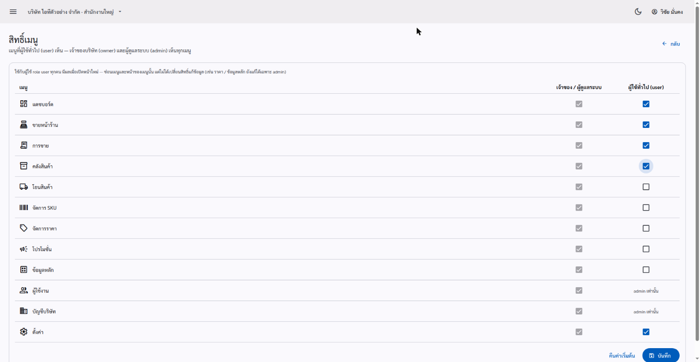
ตัวอย่าง: เปิดเมนูคลังสินค้าให้พนักงาน 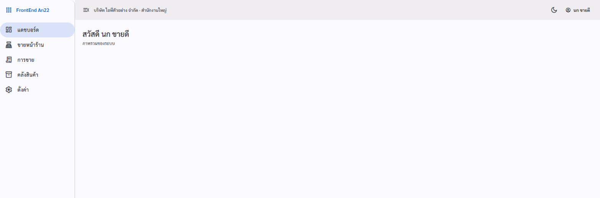
เมนูที่พนักงาน (นก ขายดี) เห็นหลังเข้าสู่ระบบ หมายเหตุ สิทธิ์เมนูซ่อนเฉพาะเมนู สิทธิ์แก้ไขข้อมูล (เช่น ราคา ข้อมูลหลัก ตัดสต็อก) ยังเป็นของผู้ดูแลเสมอ ดูตารางสิทธิ์ในภาคผนวก
สินค้า (SKU)
เมนู จัดการ SKU — ข้อมูลหลักของสินค้า หน่วยนับ บาร์โค้ด ผู้จำหน่าย และการคุม Serial
5.1 รายการสินค้า
ค้นหาได้ด้วยรหัส ชื่อ หรือบาร์โค้ด (ทุกหน่วย) กรองตามหมวดหมู่ ประเภท และสถานะการขาย ปุ่ม Excel / ป้าย มีส่งออก Excel นำเข้าจาก Excel และพิมพ์ป้าย
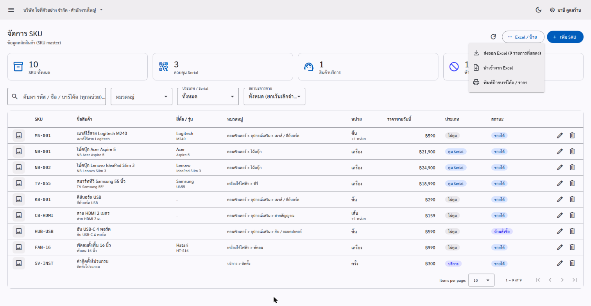
รายการ SKU และเมนู Excel / ป้าย 5.2 เพิ่มสินค้าทั่วไป
กด + เพิ่ม SKU
ข้อมูลทั่วไป : รหัส SKU ชื่อสินค้า ชื่อย่อบนใบเสร็จ (ไม่เกิน 20 ตัว) หมวดหมู่ ยี่ห้อ รุ่น ประเภท (สินค้า / บริการ)การขาย ภาษี และต้นทุน : สถานะการขาย VAT 7% หรือยกเว้น ต้นทุนมาตรฐาน (ไม่รวม VAT ใช้เป็นค่าตั้งต้นตอนรับเข้า) จุดสั่งซื้อและสต็อกสูงสุดของสาขานี้หน่วยนับและบาร์โค้ด : หน่วยฐาน (หน่วยที่นับสต็อก) และหน่วยใหญ่ เช่น กล่อง = 4 ชิ้น พร้อมบาร์โค้ดของแต่ละหน่วยผู้จำหน่าย : ราคาซื้อ lead time MOQ ติดดาวที่ผู้จำหน่ายหลักรูปสินค้า (ระบบย่อรูปให้อัตโนมัติ) แล้วกด บันทึก
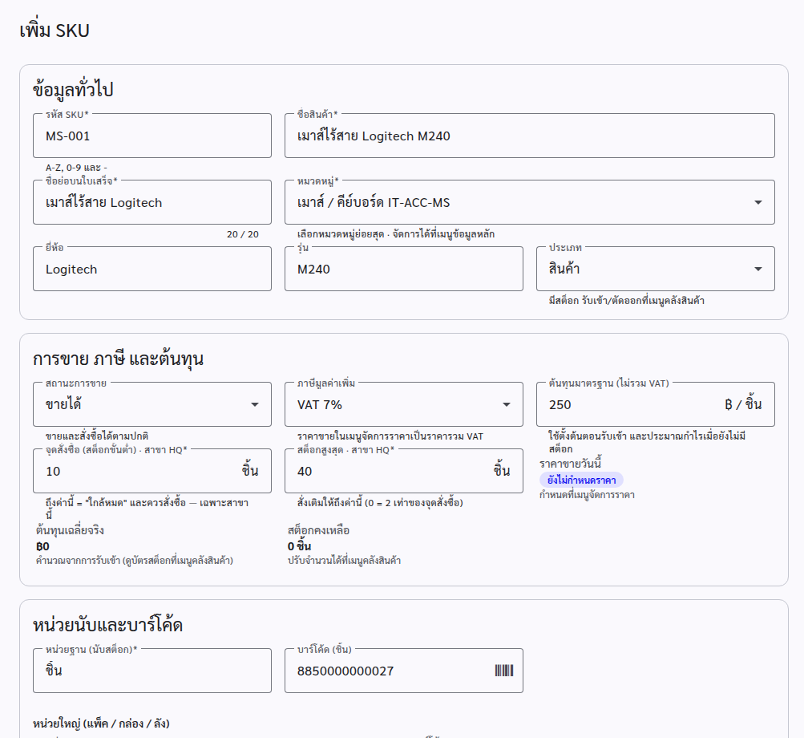
ข้อมูลทั่วไป การขาย ภาษี และต้นทุน 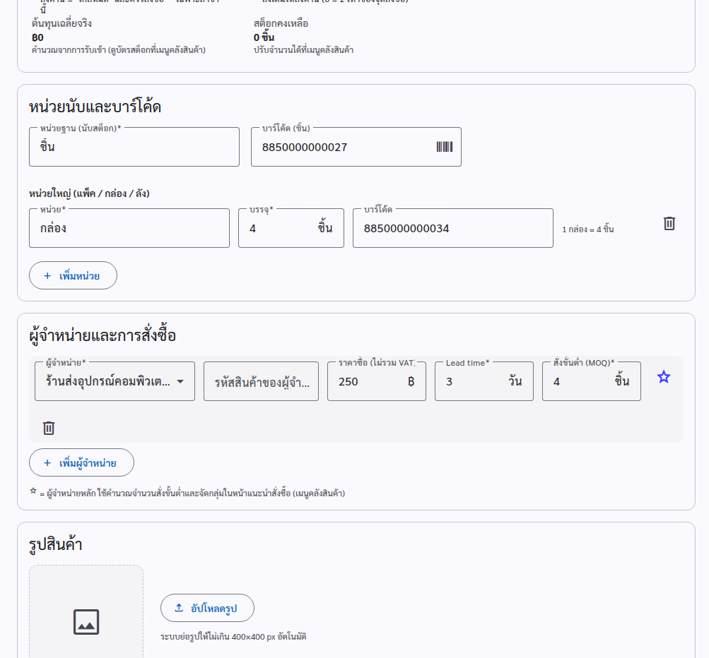
หน่วยใหญ่ (กล่อง ×4) และผู้จำหน่าย ราคาขายไม่ได้อยู่ในฟอร์มนี้ ตั้งราคาที่เมนู จัดการราคา (บทที่ 6) · สต็อกเปลี่ยนได้ที่เมนู คลังสินค้า เท่านั้น · บาร์โค้ดทุกหน่วยต้องไม่ซ้ำกับสินค้าอื่น
5.3 สินค้าคุม Serial
สำหรับสินค้าที่ต้องติดตามรายเครื่อง เช่น โน้ตบุ๊ก ทีวี มือถือ เปิด ควบคุม Serial Number แล้วกำหนด
Prefix และ ความยาว (ไม่บังคับ) ระบบตรวจรูปแบบตอนรับเข้า เช่น NB ยาว 8 ตัว → NB-00001ระยะรับประกัน (เดือน) พิมพ์บนใบเสร็จ นับจากวันขาย
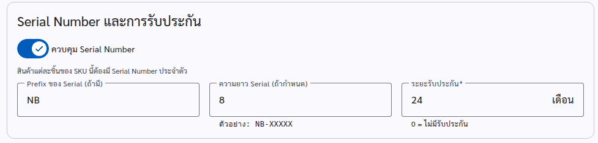
ตั้งค่า Serial และการรับประกัน กฎของสินค้า Serial มีหน่วยเดียว (ไม่มีหน่วยกล่อง) · สต็อก = จำนวน Serial ที่อยู่ในคลัง · ทุนคิดรายเครื่อง · เปลี่ยนการคุม Serial ไม่ได้ถ้ายังมีสต็อก
5.4 สินค้าบริการ และสถานะการขาย
บริการ (เช่น ค่าติดตั้งโปรแกรม) ขายได้เหมือนสินค้าแต่ไม่มีสต็อก ต้นทุนมาตรฐานคือทุนต่อครั้ง ไม่แสดงในเมนูคลังสินค้า
สถานะการขาย ผล ขายได้ ขายและสั่งซื้อได้ตามปกติ ห้ามขาย สั่งซื้อ / รับเข้าได้ แต่ขายไม่ได้ ห้ามสั่งซื้อ ขายของที่เหลือได้ รับเข้าไม่ได้ เลิกจำหน่าย ซ่อนจากคลังสินค้าและจัดการราคา
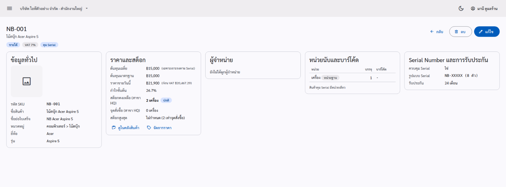
หน้ารายละเอียด SKU 5.5 นำเข้าจาก Excel
เมนู Excel / ป้าย → นำเข้าจาก Excel กด ดาวน์โหลดแม่แบบ หรือใช้ไฟล์ที่ส่งออกจากหน้ารายการ
กรอกแถวละ 1 SKU รหัสที่มีอยู่แล้ว = แก้ไข (ช่องว่างคงค่าเดิม) รหัสใหม่ = เพิ่ม
กด เลือกไฟล์ .xlsx ระบบตรวจทุกแถวก่อน แถวที่ผิดจะถูกข้าม
กด นำเข้า แล้วดูผลทีละแถว
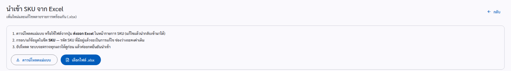
ขั้นตอนนำเข้า 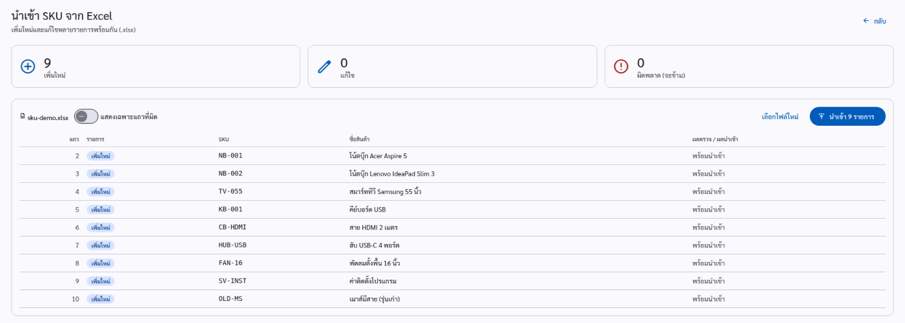
ผลตรวจก่อนนำเข้า 9 รายการ 5.6 พิมพ์ป้ายบาร์โค้ด / ป้ายราคา
เมนู Excel / ป้าย → พิมพ์ป้ายบาร์โค้ด / ราคา เลือกรูปแบบ (สติกเกอร์บาร์โค้ด หรือ ป้ายราคาชั้นวาง) ขนาดกระดาษสติกเกอร์ A4 ตำแหน่งดวงเริ่มพิมพ์ (ใช้กระดาษที่เหลือจากครั้งก่อน) และจำนวนป้ายของแต่ละสินค้า แล้วกด พิมพ์ ตั้งเครื่องพิมพ์เป็น A4 ขนาดจริง 100% ไม่มีขอบ
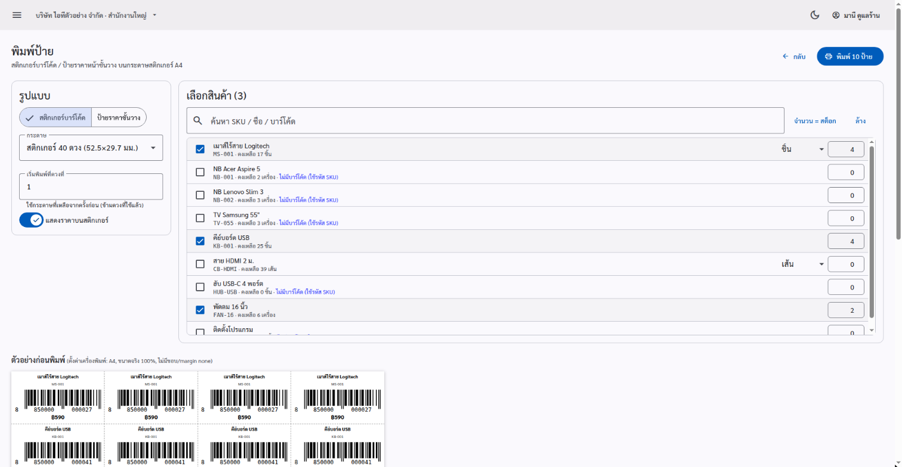
เลือกสินค้าและดูตัวอย่างป้ายก่อนพิมพ์
ราคาขาย
เมนู จัดการราคา — ราคาขาย (รวม VAT) แบ่งเป็นช่วงวันที่มีผล ตั้งราคาล่วงหน้าได้
ผู้ดูแล
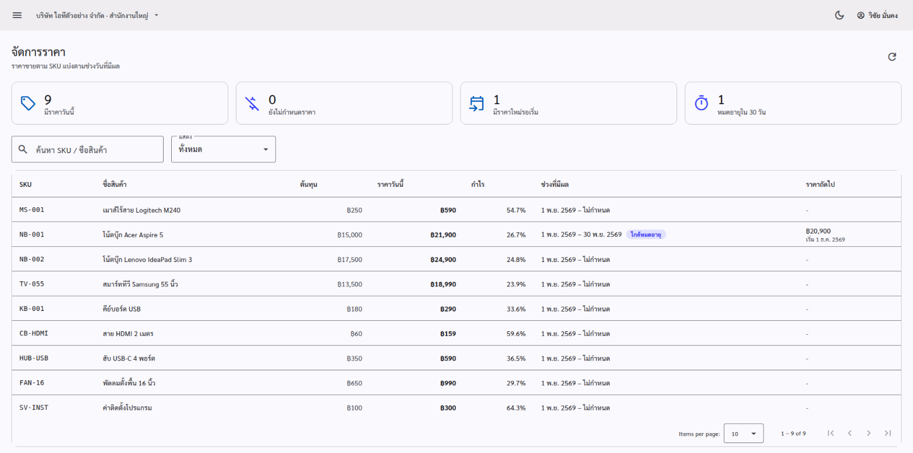
รายการราคา: ทุน ราคาวันนี้ กำไรขั้นต้น ช่วงที่มีผล และราคาถัดไป 6.1 ตั้งราคา
กดแถวสินค้า แล้วกด + เพิ่มช่วงราคา
กรอกราคาขาย (รวม VAT) ระบบแสดงราคาก่อน VAT และกำไรขั้นต้นให้ทันที
เลือกวันที่เริ่ม และวันที่สิ้นสุด (เว้นว่าง = ไม่กำหนด) พิมพ์วันที่แบบ วัน/เดือน/ปี พ.ศ. ได้ เช่น 1/11/2569
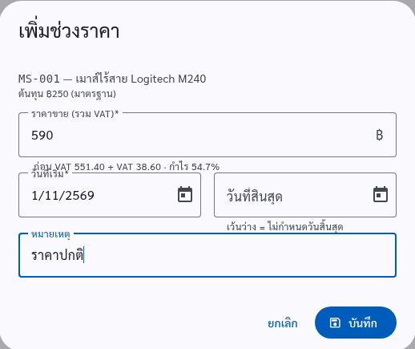
เพิ่มช่วงราคา 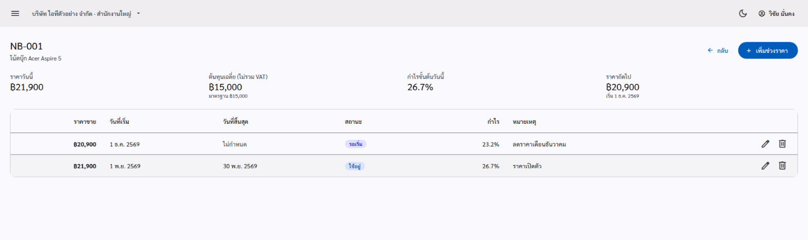
ราคาปัจจุบัน (ใช้อยู่) และราคาที่ตั้งล่วงหน้า (รอเริ่ม) 6.2 นำเข้า / ส่งออก Excel
ส่งออก Excel ได้ไฟล์ราคาที่ใช้อยู่และรอเริ่มของทุกสินค้า (ไม่ขึ้นกับตัวกรอง) ผู้ดูแลแก้แล้วกด นำเข้า Excel เพื่อเปลี่ยนราคาหลายสินค้าพร้อมกัน
1 แถว = 1 ช่วงราคา: รหัส SKU ราคาขาย (รวม VAT) วันเริ่ม วันสิ้นสุด (ว่าง = ไม่กำหนด) และหมายเหตุ วันที่เขียนแบบ วัน/เดือน/ปี เช่น 1/12/2569
SKU + วันเริ่มตรงกับช่วงที่มีอยู่ = แก้ไขช่วงนั้น ไม่ตรง = เพิ่มช่วงใหม่
อัปโหลด ระบบตรวจทุกแถว แสดงผล เพิ่มใหม่ / แก้ไข / ไม่เปลี่ยนแปลง / ผิดพลาด และช่วงเดิมที่จะถูกปิด แล้วกด นำเข้า
เปลี่ยนราคาด้วยไฟล์ เพิ่มแถวราคาใหม่ที่วันเริ่มใหม่ได้เลย เช่น ราคาเดิมไม่กำหนดวันสิ้นสุด แล้วใส่ราคาใหม่เริ่ม 1/12/2569 ระบบจะปิดราคาเดิมถึง 30/11/2569 ให้อัตโนมัติ (เมื่อราคาใหม่ครอบคลุมส่วนที่เหลือของราคาเดิม) ช่วงที่ทับแบบอื่นจะขึ้นผิดให้แก้ก่อน การนำเข้าไม่ลบช่วงราคา
กฎ ช่วงราคาของสินค้าเดียวกันห้ามซ้อนกัน · สินค้าที่ไม่มีราคาวันนี้แสดง "ยังไม่กำหนดราคา" และขายไม่ได้ · กำไรคิดจากราคาก่อน VAT เทียบกับทุนเฉลี่ย
โปรโมชั่น
เมนู โปรโมชั่น — ส่วนลดและของแถมที่หน้าขายคิดให้อัตโนมัติ
ผู้ดูแล
ประเภท เงื่อนไข ตัวอย่าง ลดราคาสินค้า ลด % หรือบาทต่อชิ้น ของสินค้า / หมวดที่ร่วม (กำหนดจำนวนขั้นต่ำต่อรายการได้) อุปกรณ์เสริมลด 10% ลดท้ายบิล ลดทั้งบิลเมื่อยอดถึงที่กำหนด ซื้อครบ 20,000 ลด 500 ของแถม ซื้อครบจำนวน (หรือยอดเงิน) ได้ของแถม ซ้ำได้หลายชุด ซื้อโน้ตบุ๊กแถมเมาส์
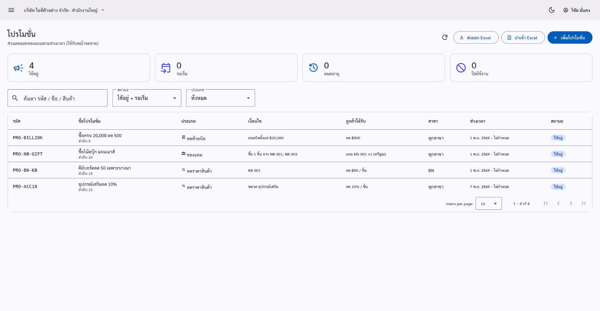
รายการโปรโมชั่น 7.1 สร้างโปรโมชั่น
กด + เพิ่มโปรโมชั่น กรอกรหัส ชื่อ ประเภท
ลำดับความสำคัญ — เลขมากเป็นค่าเริ่มต้นเมื่อหลายโปรชนกัน หน้าร้านเปลี่ยนเป็นโปรอื่นได้ (ดู 10.3) ใช้ร่วมกับโปรอื่นได้ ปิด = โปรนี้หยุดโปรที่ลำดับต่ำกว่าใช้ที่สาขา — ไม่เลือก = ทุกสาขา (โปรเฉพาะสาขาสร้างได้เฉพาะผู้ดูแลทุกสาขา / เจ้าของ)ช่วงเวลา และ เงื่อนไข (สินค้า / หมวดที่ร่วม จำนวนขั้นต่ำ)ส่วนลด แล้วดู ตัวอย่างผลของโปร ราคาหลังลดและกำไรของแต่ละสินค้า ก่อนกด บันทึก
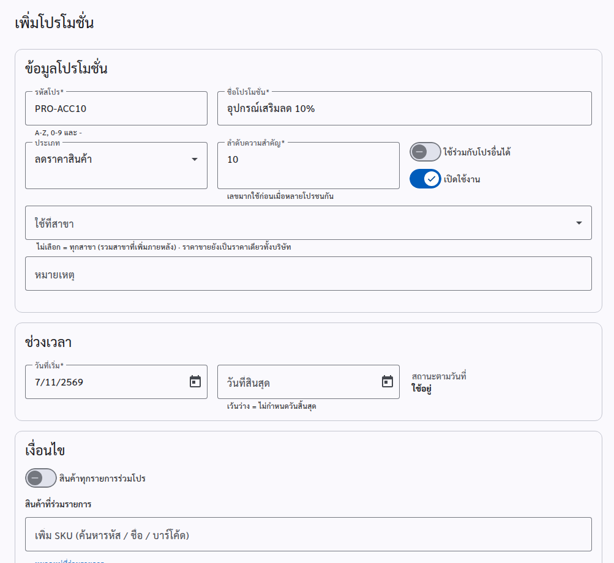
ข้อมูลโปรโมชั่นและช่วงเวลา 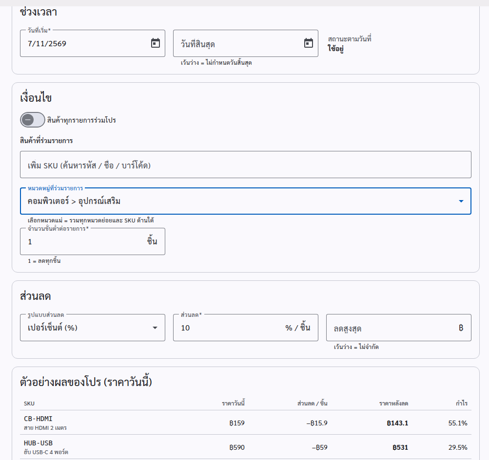
เงื่อนไข ส่วนลด และตัวอย่างผลของโปร โปรที่เริ่มแล้ว แก้ได้เฉพาะ เปิด / ปิดใช้งาน วันที่สิ้นสุด (ให้สั้นลง) และหมายเหตุ ลบไม่ได้ ให้ปิดใช้งานแทน
7.2 นำเข้า / ส่งออก Excel
ส่งออก Excel ในหน้ารายการโปรได้ไฟล์ของทุกโปร (ไม่ขึ้นกับตัวกรอง) ที่แก้แล้วนำเข้ากลับได้ทันที ผู้ดูแลกด นำเข้า Excel เพื่อเพิ่มหรือแก้หลายโปรพร้อมกัน
ดาวน์โหลดแม่แบบ (มีตัวอย่างครบ 3 ประเภท และชีตรหัส SKU / หมวด / สาขาให้ดู) หรือใช้ไฟล์จากปุ่มส่งออก
กรอก 1 แถวต่อ 1 โปร วันที่เป็น วัน/เดือน/ปี เช่น 1/12/2569 สินค้า หมวด และสาขาหลายตัวคั่นด้วย , ของแถมเขียนเป็น รหัส SKU:จำนวน เช่น SV-SETUP:1, MS-001:2
อัปโหลด ระบบตรวจทุกแถวด้วยกฎเดียวกับฟอร์ม แสดงผล เพิ่มใหม่ / แก้ไข / ไม่เปลี่ยนแปลง / ผิดพลาด แล้วกด นำเข้า แถวที่ผิดจะถูกข้าม
แก้โปรเดิมด้วยไฟล์ รหัสโปรที่มีอยู่แล้วจะแก้ไขตามไฟล์ทุกช่อง (วันสิ้นสุดว่าง = ไม่กำหนด) จึงควรแก้จากไฟล์ที่ส่งออกมา โปรที่เริ่มแล้วยังแก้ได้เฉพาะช่องที่บอกไว้ด้านบน และการนำเข้าไม่ลบโปรที่ไม่อยู่ในไฟล์
หน้าขายคิดโปรอย่างไร คิดส่วนลดสินค้าก่อน แล้วคิดส่วนลดท้ายบิลจากยอดหลังลด ของแถมเป็นรายการราคา 0 ที่ยังตัดสต็อก (ของแถมที่คุม Serial ต้องสแกน Serial) ส่วนลดพิเศษ (หัวข้อ 10.4) คิดหลังโปรทั้งหมด
คลังสินค้า
เมนู คลังสินค้า — สต็อกของสาขาที่ทำงานอยู่ รับเข้า ตัดออก Serial บัตรสต็อก และแนะนำสั่งซื้อ
ผู้ดูแล พนักงาน (ถ้าเปิดเมนูให้) — ตัดสินค้าออกเฉพาะผู้ดูแล
8.1 รายการคลัง
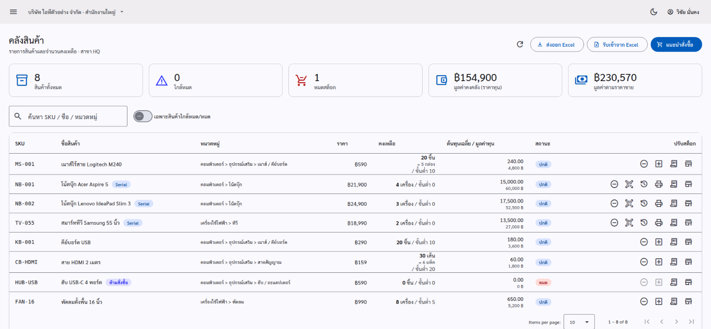
สต็อกของสาขา HQ — คงเหลือ (แสดงเป็นกล่องด้วย) ต้นทุนเฉลี่ย มูลค่า และสถานะ ปุ่มท้ายแถว (ซ้ายไปขวา): ตัดออก · รับเข้า (สินค้า Serial = รับ Serial) · ประวัติ Serial · พิมพ์ป้าย Serial · บัตรสต็อก · สต็อกทุกสาขา สถานะ ใกล้หมด = ถึงจุดสั่งซื้อ หมด = คงเหลือ 0
วิธีคิดต้นทุน สินค้าทั่วไปใช้ ถัวเฉลี่ยเคลื่อนที่ (เฉลี่ยใหม่ทุกครั้งที่รับเข้า ตัดออกที่ทุนเฉลี่ย) สินค้า Serial ใช้ ราคาทุนเฉพาะเจาะจง (แต่ละเครื่องมีทุนของตัวเอง ขายเครื่องไหนตัดทุนเครื่องนั้น) ทุนเฉลี่ยคิดแยกต่อสาขา
8.2 รับสินค้าเข้า
กด ⊞ ในแถวสินค้า
กรอกจำนวน เลือกหน่วย (ชิ้น หรือ กล่อง) และต้นทุนต่อหน่วยที่เลือก (ไม่รวม VAT)
ใส่เลขใบกำกับของผู้จำหน่ายในช่องอ้างอิง ระบบแสดงต้นทุนเฉลี่ยใหม่ให้ก่อนกด รับเข้า
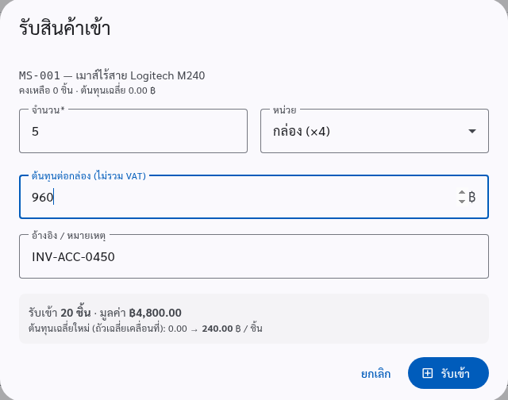
รับเข้า 5 กล่อง (= 20 ชิ้น) 8.3 รับเข้าสินค้า Serial
กดปุ่ม Serial ในแถวสินค้า กรอกต้นทุนต่อเครื่อง แล้วสแกนหรือพิมพ์ Serial บรรทัดละ 1 เครื่อง ระบบตรวจรูปแบบและ Serial ซ้ำทันที
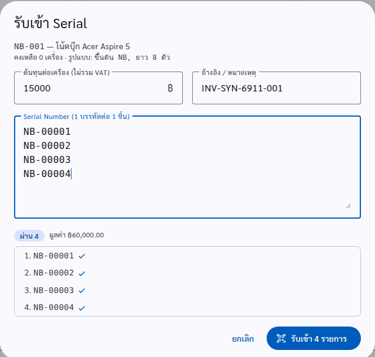
รับเข้า 4 เครื่อง Serial ที่เคยตัดออกแล้วกลับมา (เช่น ลูกค้าคืน ผู้จำหน่ายซ่อมแล้วส่งกลับ) รับเข้าด้วย Serial เดิมได้ ระบบใช้ประวัติเดิมของเครื่องนั้นต่อ Serial ที่ยังอยู่ในคลังของสาขาอื่นรับซ้ำไม่ได้ ให้ใช้ใบโอน (บทที่ 9)
8.4 รับเข้าจาก Excel
ปุ่ม รับเข้าจาก Excel (หัวหน้า) — รับหลาย SKU ในไฟล์เดียว สินค้าทั่วไปกรอกจำนวน (และหน่วย) สินค้า Serial กรอก 1 แถวต่อ 1 เครื่อง แถวที่ผิดแสดงเป็นสีแดงพร้อมเหตุผลและถูกข้าม
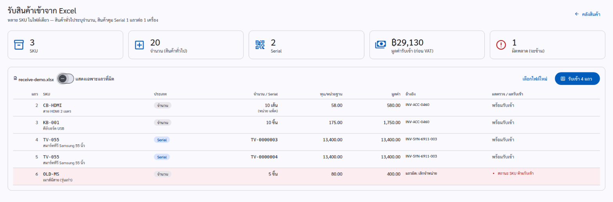
ตรวจไฟล์ก่อนรับเข้า: แถว OLD-MS ผิดเพราะสินค้าเลิกจำหน่าย 8.5 ตัดสินค้าออก ผู้ดูแล
กด ⊖ กรอกจำนวน เลือกเหตุผล (ขายแล้ว / ชำรุดเสียหาย / อื่นๆ — อื่นๆ ต้องใส่หมายเหตุ) ตัดออกที่ทุนเฉลี่ย สำหรับสินค้า Serial ให้เลือกเครื่องที่จะตัด
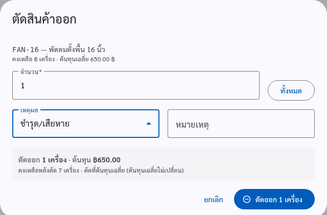
ตัดออกสินค้าทั่วไป 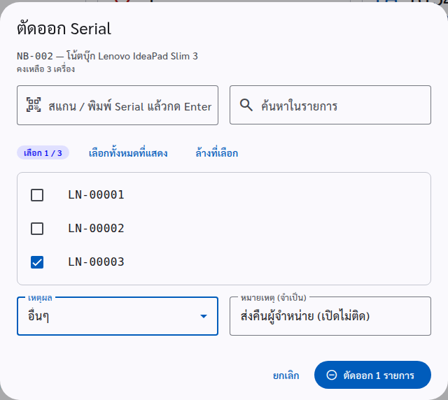
ตัดออก Serial: ส่งคืนผู้จำหน่าย 8.6 ประวัติ Serial
กดไอคอนนาฬิกาในแถวสินค้า Serial เพื่อดูทุกเครื่อง (คงคลัง ขายแล้ว ชำรุด ระหว่างโอน) กดที่ Serial เพื่อดูประวัติรับเข้า / ตัดออกของเครื่องนั้น
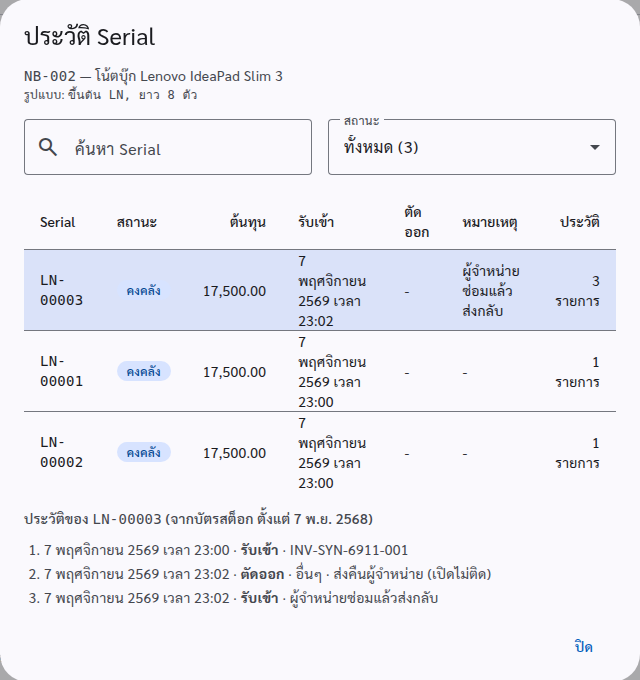
LN-00003 ถูกส่งคืนผู้จำหน่ายแล้วรับกลับเข้าคลัง 8.7 บัตรสต็อก
แสดงการเคลื่อนไหวของสินค้า 1 รายการในสาขาเดียว: ยอดยกมา รับเข้า ตัดออก และยอดคงเหลือ (จำนวน ทุนเฉลี่ย มูลค่า) หลังทุกรายการ เลือกช่วงวันที่ได้ไม่เกิน 366 วัน และเลือกสาขาอื่นที่ตัวเองทำงานได้
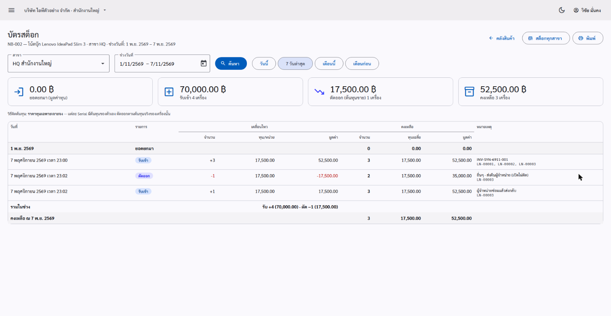
บัตรสต็อก NB-002 8.8 สต็อกทุกสาขา
สินค้าเดียวกันในแต่ละสาขา (ทุนเฉลี่ยคิดแยกต่อสาขา) 8.9 แนะนำสั่งซื้อ
ปุ่ม แนะนำสั่งซื้อ แสดงสินค้าที่คงเหลือถึงจุดสั่งซื้อ แยกตามผู้จำหน่ายหลัก จำนวนแนะนำ = เติมให้ถึงสต็อกสูงสุด ไม่น้อยกว่า MOQ และปัดเป็นแพ็ก / กล่อง พิมพ์ไปสั่งของได้
หน้าแนะนำสั่งซื้อ 8.10 ป้าย Serial
พิมพ์ป้ายบาร์โค้ด Serial ของเครื่องที่อยู่ในคลัง
โอนสินค้าระหว่างสาขา
เมนู โอนสินค้า — สาขาต้นทางสร้างใบโอน สาขาปลายทางกดรับ
ผู้ดูแล พนักงาน (ถ้าเปิดเมนูให้) · ยกเลิกใบโอนได้เฉพาะผู้ดูแลของสาขาต้นทาง
9.1 สร้างใบโอน (ที่สาขาต้นทาง)
กด + สร้างใบโอน เลือกสาขาปลายทาง ใส่หมายเหตุ
เพิ่มสินค้าและจำนวน สินค้า Serial ให้ติ๊กเครื่องที่ส่ง
กด สร้างใบโอน สินค้าออกจากสต็อกต้นทางทันทีที่ทุนของสาขาต้นทาง เครื่อง Serial มีสถานะ "ระหว่างโอน" (ไม่มีสาขาไหนขายได้)
สร้างใบโอน HQ → BN ใบโอนสถานะ "ระหว่างโอน" — พิมพ์ใบโอนส่งไปกับสินค้าได้ 9.2 รับของ (ที่สาขาปลายทาง)
สลับไปสาขาปลายทาง เปิดใบโอน
กรอกจำนวนที่ได้รับจริง ถ้าได้รับไม่ครบต้องใส่เหตุผลของที่ขาด / เสียหาย
กด รับเข้าสาขานี้ (รับได้ครั้งเดียว) ของที่ขาดจะถูกตัดออกที่สาขาปลายทาง
รับคีย์บอร์ด 4 จาก 5 ชิ้น พร้อมเหตุผล ใบโอนที่รับแล้ว แสดงจำนวนที่ขาด รายการใบโอน กรองรับเข้า / ส่งออก / ทั้งหมด
ขายหน้าร้าน (POS)
เมนู ขายหน้าร้าน — เปิดกะ ขาย รับชำระ พิมพ์ใบเสร็จ และปิดกะ
พนักงาน ผู้ดูแล
ก่อนเริ่ม เครื่องต้องตั้ง "เครื่องนี้" แล้ว (หัวข้อ 2.3) ถ้ายังไม่ตั้ง หน้าขายจะแสดงแถบเตือนและชำระเงินไม่ได้
10.1 เปิดกะ
1 กะ = 1 เครื่อง (ลิ้นชัก) + 1 แคชเชียร์ เปิดหน้าขายครั้งแรก ระบบถามเงินทอนตั้งต้น นับเงินในลิ้นชักแล้วกรอก (หรือเปิด นับตามชนิดแบงก์ / เหรียญ ) แล้วกด เปิดกะ
เปิดกะ: เงินทอนตั้งต้น 2,000 บาท หน้าขายหลังเปิดกะ แถบด้านบนแสดงเลขกะ แคชเชียร์ และเครื่อง คีย์ลัด F2 ช่องสแกน / ค้นหา · F8 พักบิล · F12 ชำระเงิน
10.2 เพิ่มสินค้าในบิล
สแกนบาร์โค้ด แล้วกด Enter (สแกนบาร์โค้ดกล่องได้หน่วยกล่อง)หรือพิมพ์รหัส / ชื่อ แล้วเลือกจากรายการ (แสดงทุกหน่วยพร้อมคงเหลือและราคา)
ปรับจำนวนด้วย − / + หรือพิมพ์ในช่อง ลบรายการด้วยไอคอนถังขยะ
ค้นหาสินค้า เลือกหน่วยเส้นหรือแพ็ก สินค้า Serial
เมื่อเพิ่มสินค้า Serial ระบบให้สแกนหรือติ๊ก Serial ที่ขาย (ขายได้เฉพาะเครื่องที่อยู่ในสาขานี้) แต่ละเครื่องเป็น 1 บรรทัดในบิล
เลือก Serial ที่ขาย 10.3 โปรโมชั่นและของแถม
ระบบคิดโปรให้อัตโนมัติ ใต้ชื่อสินค้าแสดงรหัสโปรที่ได้ ของแถมเพิ่มเป็นบรรทัดราคา 0 ส่วนลดท้ายบิลแสดงที่สรุปยอดด้านขวา
ถ้ามีหลายโปรที่ใช้ด้วยกันไม่ได้ ระบบใช้โปรลำดับสูงสุดให้ก่อน และแสดงปุ่ม เปลี่ยนโปร ใต้ชื่อสินค้า (หรือ เปลี่ยนโปรท้ายบิล ที่สรุปยอด) กดแล้วเลือกตัวที่ลูกค้าต้องการ แต่ละตัวเลือกแสดงของแถมและยอดบิลให้ดูก่อน เลือกครั้งเดียวมีผลกับทุกรายการที่มีตัวเลือกชุดเดียวกัน
อุปกรณ์เสริมได้ลด 10% อัตโนมัติ เลือกโปรที่ลูกค้าต้องการ แต่ละตัวเลือกแสดงยอดบิลให้ดูก่อน 10.4 ส่วนลดพิเศษ
กด % ท้ายรายการ (ลดเฉพาะรายการ) หรือ ส่วนลดพิเศษท้ายบิล เลือกเป็น % หรือบาท และต้องเลือก / พิมพ์เหตุผลเสมอ พนักงานลดได้ไม่เกินเพดานที่ตั้งไว้ (ค่าเริ่มต้น 5% ของราคาหลังโปร) ผู้ดูแลลดได้ไม่จำกัด ถ้าราคาหลังลดต่ำกว่าทุน ระบบแสดงคำเตือน
ลดพิเศษ 200 บาท เหตุผล "ลูกค้าประจำ" บิลโน้ตบุ๊ก: แถมเมาส์ ลดท้ายบิล 500 และส่วนลดพิเศษ 200 10.5 ชำระเงิน
กด ชำระเงิน (F12)
กดปุ่มช่องทางชำระ ระบบใส่ยอดที่เหลือให้ แก้จำนวนได้ กดหลายช่องทางเพื่อแบ่งจ่าย
เงินสด: กรอกเงินที่รับมา หรือกดปุ่มยอดลัด ระบบคำนวณเงินทอน (ปัดเศษเฉพาะส่วนเงินสด) ช่องทางอื่นรับได้ไม่เกินยอดที่เหลือ
ช่องทางที่ต้องมีเลขอ้างอิง (เช่น เลขอนุมัติบัตร) ต้องกรอกก่อน กด ยืนยันชำระเงิน
รับเงินสด 1,500 ทอน 295 แบ่งจ่าย: บัตร 15,000 + เงินสด 6,200
หลังชำระ ระบบแสดงเลขบิลและเงินทอน กด พิมพ์ใบเสร็จ (80 มม.) หรือ บิลใหม่ (ไม่พิมพ์) ถ้ามีเงินสดลิ้นชักจะเปิดเอง พิมพ์ใบเสร็จย้อนหลังได้จากปุ่ม พิมพ์ใบเสร็จ ของบิลล่าสุด หรือหน้าบิล (บทที่ 11)
ชำระเงินสำเร็จ 10.6 พักบิล
ลูกค้ายังไม่พร้อมจ่าย กด พักบิล (F8) (ใส่ชื่อลูกค้าไว้จะหาง่าย) แล้วขายบิลอื่นต่อได้ เรียกกลับด้วย บิลที่พัก บิลที่พักเก็บไว้ที่เซิร์ฟเวอร์แยกตามเครื่อง
รายการบิลที่พัก 10.7 ใบกำกับภาษีเต็มรูปตอนขาย
ถ้าลูกค้าขอใบกำกับภาษีเต็มรูป กด ขอใบกำกับภาษีเต็มรูป ก่อนชำระเงิน กรอกเลขผู้เสียภาษี / บัตรประชาชน (หรือหนังสือเดินทางสำหรับชาวต่างชาติ) ชื่อ สำนักงานใหญ่ / สาขา (เฉพาะผู้ซื้อที่จด VAT) และที่อยู่ เมื่อชำระเงิน ระบบออกใบกำกับภาษีเต็มรูปแทนใบกำกับอย่างย่อและพิมพ์ให้ทันที
ข้อมูลผู้ซื้อ บิลที่ขอใบกำกับภาษีเต็มรูป (ด้านขวาแสดงผู้ซื้อ) 10.8 เมนูกะ
ปุ่ม กะ มุมขวาบนของหน้าขาย
นำเงินเข้า / ออกลิ้นชัก — เช่น จ่ายค่าส่งของ นำเงินเข้าตู้เซฟ ต้องมีเหตุผลเปิดลิ้นชัก (ไม่มีการขาย) — ต้องมีเหตุผล นับจำนวนครั้งไว้ในรายงานกะX report — ยอดระหว่างกะ (ไม่ปิดกะ)พักหน้าจอ — ล็อกหน้าขายระหว่างไม่อยู่ ปลดล็อกด้วยรหัสผ่านของแคชเชียร์หรือผู้ดูแลปิดกะ
เมนูกะ นำเงินออก 120 บาท จ่ายค่าส่งของ
X report หน้าจอขณะพักหน้าจอ 10.9 ปิดกะ
การปิดกะเป็นการ นับแบบไม่เห็นยอด : แคชเชียร์กรอกยอดที่นับได้จริงก่อน แล้วระบบจึงแสดงยอดที่ควรมีและส่วนต่าง
นับเงิน : กรอกเงินสดที่นับได้ทั้งลิ้นชัก (รวมเงินทอนตั้งต้น) ยอดจากสลิปของบัตร / QR / ผ่อน และติ๊กตรวจโอนเงิน แล้วกด ตรวจยอด ผลตรวจยอด : ช่องทางที่มีส่วนต่างต้องเลือกสาเหตุ นับใหม่ได้ 1 ครั้งส่งมอบเงิน : กรอกเงินนำส่ง (เข้าเซฟ / ธนาคาร) ส่วนที่เหลือคือเงินทอนทิ้งไว้ในลิ้นชักสำหรับกะถัดไป แล้วกด ปิดกะ
ขั้นที่ 1 นับเงิน ขั้นที่ 2–3 ส่วนต่างเงินสด −5 บาท พร้อมสาเหตุ
ต้องให้ผู้ดูแลอนุมัติ เมื่อช่องทางใดต่างเกินเพดาน (ค่าเริ่มต้น 100 บาท) ผู้ดูแลพิมพ์ชื่อผู้ใช้และรหัสผ่านที่เครื่องได้ทันที หรือปิดกะเป็น "รออนุมัติ" แล้วผู้ดูแลอนุมัติภายหลังที่ การขาย → กะขาย
ปิดกะแล้ว — ใบสรุปปิดกะ (Z report)
การขายและเอกสาร
เมนู การขาย — รายการบิล ยกเลิก คืน / เปลี่ยนสินค้า ใบกำกับภาษี รายงานภาษีขาย และกะขาย
11.1 รายการบิล
เลือกสาขา ช่วงวันที่ (ไม่เกิน 366 วัน) หรือปุ่มลัด วันนี้ / 7 วันล่าสุด / เดือนนี้ / เดือนก่อน ด้านบนสรุปยอดขาย เฉลี่ยต่อบิล กำไรขั้นต้น (เฉพาะผู้ที่เห็นทุน) ยอดลดหนี้ ยอดยกเลิก และเงินรับแยกตามช่องทาง ค้นหาด้วยเลขบิล ลูกค้า พนักงาน หรือ Serial ได้ ปุ่ม ส่งออก Excel ส่งออกตามที่แสดง
รายการบิล 2 วัน มีบิลยกเลิกและบิลที่มีใบลดหนี้ 11.2 หน้าบิล
แสดงรายการสินค้า (Serial ระยะประกัน โปรที่ได้) ทุน / กำไร การชำระเงิน และสำเนาใบเสร็จ ปุ่มด้านบน: พิมพ์สำเนาใบเสร็จ · ออกใบกำกับภาษีเต็มรูป · เปลี่ยนสินค้า · ยกเลิกบิล · ออกใบลดหนี้ (แสดงตามสิทธิ์และวันที่)
หน้าบิลพร้อมสำเนาใบเสร็จ (ใบกำกับภาษีอย่างย่อ) 11.3 ยกเลิกบิล
ยกเลิกได้ เฉพาะบิลของวันนี้ ที่สาขาที่ขาย สินค้ากลับเข้าคลัง (Serial กลับเป็นคงคลัง) และเงินออกจากกะที่ยกเลิก ถ้าพนักงานเป็นผู้ยกเลิก ต้องให้ผู้ดูแลพิมพ์ชื่อผู้ใช้และรหัสผ่านอนุมัติที่เครื่อง บิลที่ข้ามวันแล้วให้ทำใบลดหนี้แทน
ยกเลิกบิล: เหตุผลและการอนุมัติของผู้ดูแล 11.4 ใบลดหนี้ (คืนสินค้า) ผู้ดูแล
ใช้กับบิลที่ชำระแล้ว ตั้งแต่วันถัดจากวันขาย บิลเดิมไม่ถูกแก้ ระบบออกใบลดหนี้ CN-… อ้างถึงบิล
หน้าบิล → ออกใบลดหนี้ เลือกรายการและจำนวนที่คืน (สินค้า Serial เลือกเครื่อง)
เลือกว่าของที่คืน กลับเข้าคลัง หรือ ตัดเป็นของเสีย
เลือกวิธีคืนเงิน (เงินสด หรือช่องทางเดิมของบิล ไม่เกินที่รับมา) ใส่เหตุผล แล้วบันทึก
ฟอร์มใบลดหนี้ ยอดคืนเงิน คิดตามยอดสุทธิของรายการ (หักส่วนลดแล้ว) ถ้าลูกค้าคืนสินค้าจนไม่ครบเงื่อนไขของแถม ระบบหักราคาของแถมที่ลูกค้าเก็บไว้ให้อัตโนมัติ
11.5 เปลี่ยนสินค้า
เปลี่ยนเป็น สินค้าตัวเดียวกัน หน่วยเดียวกัน (เช่น เครื่องเสียเปลี่ยนเครื่องใหม่) ไม่มีเงินเข้าออก พนักงานทำได้ภายในจำนวนวันที่ตั้งไว้ (ค่าเริ่มต้น 7 วัน) ผู้ดูแลทำได้ทุกเวลา สินค้าใหม่ต้องมีในคลังก่อน เลือกได้ว่าเครื่องที่รับคืนกลับเข้าคลังหรือตัดเป็นของเสีย ประกันยังนับจากวันขายเดิม
ใบเปลี่ยนสินค้า: เปลี่ยน Serial เครื่องใหม่ 11.6 ใบกำกับภาษีเต็มรูป
ออกภายหลัง : หน้าบิล → ออกใบกำกับภาษีเต็มรูป กรอกข้อมูลผู้ซื้อ ใบกำกับลงวันที่ขาย (ไม่จำกัดเวลา) บิลละ 1 ใบข้อมูลผู้ซื้อผิด : ห้ามแก้ไข ผู้ดูแลกด ยกเลิกและออกใบใหม่ ใบเดิมถูกยกเลิก ใบใหม่ได้เลขใหม่พิมพ์ ต้นฉบับ / สำเนา เลือกขนาด A4 หรือ 80 มม.
ส่วนใบกำกับภาษีเต็มรูปในหน้าบิล ใบกำกับภาษีเต็มรูป A4 (ต้นฉบับ) 11.7 รายงานภาษีขาย ผู้ดูแล
ปุ่ม รายงานภาษีขาย ในหน้าการขาย เลือกสาขา (สถานประกอบการ) และเดือนภาษี ใบกำกับอย่างย่อสรุปรายวันต่อเครื่อง POS ใบกำกับเต็มรูปแยกบรรทัด ใบลดหนี้เป็นยอดติดลบ พิมพ์แนวนอนหรือส่งออก Excel ได้ สรุปทุกสาขา (ผู้ดูแลทุกสาขา) ใช้ตรวจสอบเท่านั้น ไม่ใช่รายงานสำหรับยื่น
รายงานภาษีขาย สาขา HQ — บิลที่ยกเลิกไม่นับ ใบลดหนี้เป็นยอดติดลบ 11.8 กะขาย
ปุ่ม กะขาย ในหน้าการขาย แสดงกะตามช่วงวันที่ ส่วนต่างต่อแคชเชียร์ และกรองกะที่รออนุมัติ พนักงานเห็นเฉพาะกะของตัวเอง
รายการกะ หน้ากะแสดงใบสรุปปิดกะ เงินเข้า / ออก และบิลในกะ ผู้ดูแลทำได้เพิ่ม:
อนุมัติ กะที่รออนุมัติเพิ่มรายการปรับปรุง หลังปิดกะ (เช่น พบเงินตก) บันทึกแยก ไม่แก้ยอดนับเดิมปิดกะแทน กะของเครื่องอื่นที่แคชเชียร์ลืมปิด
หน้ากะหลังเพิ่มรายการปรับปรุง ส่วนต่างหลังปรับปรุง 0.00 เพิ่มรายการปรับปรุง
บัญชีบริษัท
เมนู บัญชีบริษัท — แพ็กเกจ ใบแจ้งหนี้ค่าบริการ ประวัติการใช้งาน และข้อมูลบริษัท
เจ้าของ (แพ็กเกจ ข้อมูลบริษัท) ผู้ดูแล (ดูประวัติการใช้งาน)
12.1 แพ็กเกจและค่าบริการ
แสดงแพ็กเกจปัจจุบัน สถานะ (ทดลองใช้ / ใช้งาน / ค้างชำระ) จำนวนสาขา ผู้ใช้ และเครื่อง POS ที่ใช้อยู่ ใบแจ้งหนี้รายเดือน และปุ่มเปลี่ยนแพ็กเกจ ค้างชำระเกิน 7 วันหลังครบกำหนด ระบบระงับการใช้งานทั้งบริษัท
แท็บแพ็กเกจ 12.2 ประวัติการใช้งาน
บันทึกเหตุการณ์สำคัญ เช่น เข้าสู่ระบบ แก้ราคา / โปรโมชั่น ตัดสต็อก ส่วนลดพิเศษ ยกเลิกบิล กรองตามช่วงวันที่ เหตุการณ์ ผู้ใช้ และสาขา (ผู้ดูแลสาขาเห็นเฉพาะสาขาของตัวเอง) แก้ไขหรือลบไม่ได้
ประวัติการใช้งาน 12.3 ข้อมูลบริษัท เจ้าของ
ดาวน์โหลด JSON — ข้อมูลทั้งบริษัทไฟล์เดียว (ไม่มีรหัสผ่าน) ใช้สำรองหรือย้ายระบบขอลบข้อมูลบริษัท — พิมพ์รหัสบริษัทและรหัสผ่านเพื่อยืนยัน ผู้ใช้ทุกคนเข้าระบบไม่ได้ทันที ข้อมูลถูกลบถาวรหลัง 30 วัน (ยกเลิกได้ก่อนครบ) รหัสบริษัทนำมาสมัครใหม่ไม่ได้
แท็บข้อมูลบริษัท ก่อนขอลบ ใบกำกับภาษีและรายงานภาษีต้องเก็บตามกฎหมาย (โดยทั่วไป 5 ปี) ดาวน์โหลดข้อมูลเก็บไว้ก่อน
ภาคผนวก
ก. ตารางสิทธิ์ตามบทบาท
งาน พนักงาน ผู้ดูแล เจ้าของ ขายหน้าร้าน เปิด / ปิดกะของตัวเอง นำเงินเข้า / ออก ✓ ✓ ✓ ส่วนลดพิเศษ ไม่เกินเพดาน ✓ ✓ ใบเปลี่ยนสินค้า ภายในจำนวนวันที่ตั้ง ✓ ✓ ยกเลิกบิล (วันเดียวกัน) ผู้ดูแลอนุมัติ ✓ ✓ ใบลดหนี้ · ออกใบกำกับใหม่ · รายงานภาษีขาย — ✓ ✓ จัดการ SKU · รับสินค้าเข้า ✓ (ถ้าเปิดเมนู) ✓ ✓ ตัดสินค้าออก — ✓ ✓ ราคา · โปรโมชั่น · ข้อมูลหลัก · ตั้งค่าร้าน — ✓ ✓ ผู้ใช้งาน · สิทธิ์เมนู — ✓ ✓ อนุมัติ / ปรับปรุง / ปิดกะแทน — ✓ ✓ ดูทุน / กำไร ถ้าเปิดในตั้งค่า ✓ ✓ แพ็กเกจ · ส่งออก / ลบข้อมูล · โอนความเป็นเจ้าของ — — ✓
ผู้ดูแลที่ไม่ได้เลือก "ทุกสาขา" ดูแลได้เฉพาะสาขาของตัวเอง สาขา ข้อมูลบริษัท และโปรโมชั่นเฉพาะสาขา ทำได้เฉพาะผู้ดูแลทุกสาขาและเจ้าของ
ข. ปัญหาที่พบบ่อย
อาการ สาเหตุ / วิธีแก้ หน้าขายแจ้งว่าเครื่องยังไม่ได้ตั้งเลขเครื่อง ให้ผู้ดูแลตั้ง "เครื่องนี้" ในหน้าตั้งค่า (หัวข้อ 2.3) เครื่องนี้เป็นของสาขาอื่น สลับไปสาขาของเครื่อง หรือให้ผู้ดูแลล้างการตั้งค่าเครื่องแล้วตั้งใหม่ สแกนสินค้าแล้วขึ้น "ยังไม่กำหนดราคา" ตั้งราคาที่เมนูจัดการราคา (บทที่ 6) ขาย Serial ไม่ได้ "อยู่ในคลังสาขา …" เครื่องอยู่อีกสาขา ให้ทำใบโอน (บทที่ 9) รับเข้าไม่ได้ "สถานะ SKU ห้ามรับเข้า" สินค้าเป็น ห้ามสั่งซื้อ หรือ เลิกจำหน่าย แก้สถานะที่จัดการ SKU ไม่มีปุ่มยกเลิกบิล บิลข้ามวันแล้ว ให้ทำใบลดหนี้ หรือบิลขายที่สาขาอื่น ปิดกะแล้วขึ้น "รออนุมัติ" ส่วนต่างเกินเพดาน ให้ผู้ดูแลอนุมัติที่ การขาย → กะขาย เพิ่มสาขา / ผู้ใช้ / เครื่องไม่ได้ "เกินแพ็กเกจ" เจ้าของอัปเกรดแพ็กเกจ หรือปิดใช้งานรายการที่ไม่ใช้แล้ว เมนูหายไปหลังเข้าระบบ ผู้ดูแลไม่ได้เปิดเมนูนั้นให้ผู้ใช้ทั่วไป (หัวข้อ 4.3)
ค. คำศัพท์
คำ ความหมาย SKU รหัสสินค้า 1 รายการ Serial Number หมายเลขประจำเครื่อง ใช้ติดตามเครื่องรายตัวตั้งแต่รับเข้าจนขายและรับประกัน หน่วยฐาน / หน่วยใหญ่ หน่วยที่นับสต็อก / หน่วยที่บรรจุหลายชิ้น เช่น กล่อง = 4 ชิ้น ต้นทุนมาตรฐาน ทุนตั้งต้นของสินค้า ใช้เป็นค่าเริ่มต้นตอนรับเข้า ต้นทุนเฉลี่ย ทุนจริงของสต็อกในสาขา (ถัวเฉลี่ยเคลื่อนที่ / เฉพาะเจาะจงสำหรับ Serial) จุดสั่งซื้อ / สต็อกสูงสุด คงเหลือถึงจุดนี้ควรสั่ง / สั่งเติมให้ถึงจำนวนนี้ MOQ / Lead time จำนวนสั่งขั้นต่ำของผู้จำหน่าย / จำนวนวันที่รอของ กะ ช่วงการทำงานของแคชเชียร์ 1 คนกับเครื่อง POS 1 เครื่อง ตั้งแต่เปิดจนปิด X report / Z report สรุปยอดระหว่างกะ / ใบสรุปตอนปิดกะ ใบกำกับภาษีอย่างย่อ / เต็มรูป ใบเสร็จที่หน้าขาย / ใบที่มีชื่อและเลขภาษีผู้ซื้อ ใบลดหนี้ เอกสารคืนสินค้า / คืนเงินของบิลที่ข้ามวันแล้ว POS ID หมายเลขเครื่องที่กรมสรรพากรอนุมัติ พิมพ์บนใบกำกับภาษีอย่างย่อ